from sklearn.tree import DecisionTreeClassifier # Import the modelclf = DecisionTreeClassifier(max_depth=2, random_state=seed) # Instantiate and fit the model (on the training set)clf.fit(X_train, y_train) # Train the modely_pred = clf.predict(X_test) # Predict new valuesdecision_tree_test_score = evaluation_metric(y_test, y_pred) # Evaluate the model (on the test set)decision_tree_test_score
0.9761904761904763
Plotting the tree
Code
from sklearn.tree import plot_treeplt.figure(figsize=(6, 4))plot_tree(clf, feature_names=X.columns, class_names=target_names, filled=True);
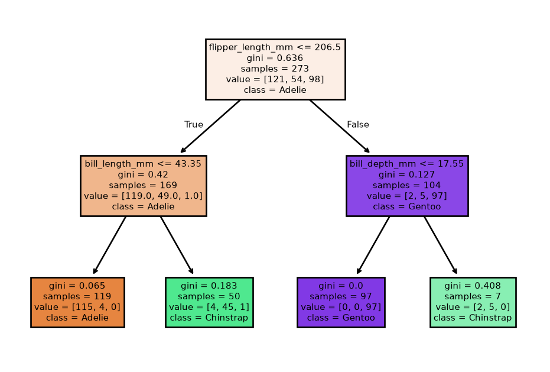
Checking feature relevance
Code
feature_importance_df = pd.DataFrame({'Feature': X.columns, 'Importance': clf.feature_importances_}) # Create a DataFrame to display feature importancefeature_importance_df = feature_importance_df.sort_values(['Importance', 'Feature'], ascending=[False, True]) # Sort the DataFrame by importance in descending orderfeature_importance_df # Display the feature importance
Feature
Importance
2
flipper_length_mm
0.580545
0
bill_length_mm
0.351864
1
bill_depth_mm
0.067591
3
body_mass_g
0.000000
Feature selection: checking correlations
Code
X_train.corr(method='pearson', numeric_only=True)
bill_length_mm
bill_depth_mm
flipper_length_mm
body_mass_g
bill_length_mm
1.000000
-0.234851
0.664592
0.597523
bill_depth_mm
-0.234851
1.000000
-0.589534
-0.479623
flipper_length_mm
0.664592
-0.589534
1.000000
0.866949
body_mass_g
0.597523
-0.479623
0.866949
1.000000
Most relevant penguin measurements
Code
plot(df, clf, feature_importance_df['Feature'].iloc[:2].tolist()) # plot the 2 most important features
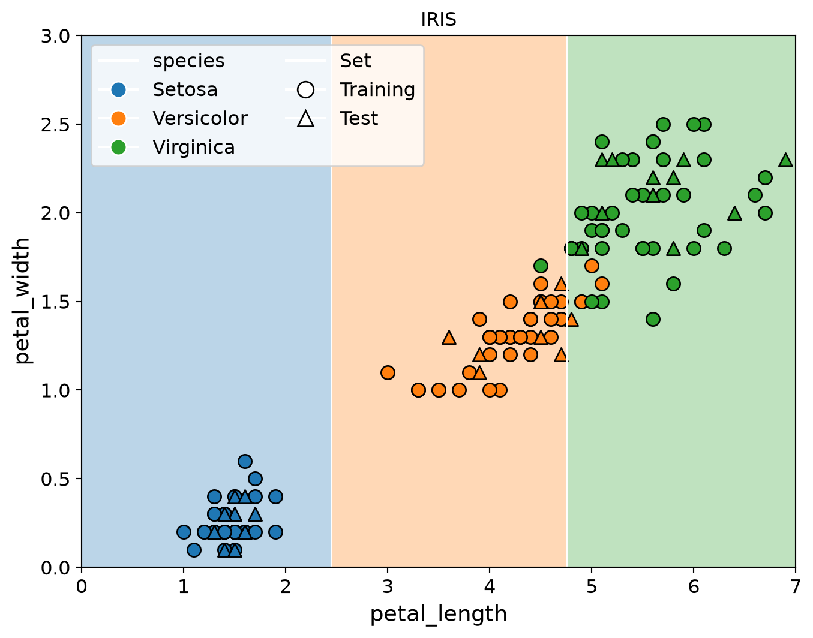
Less relevant penguin measurements
Code
plot(df, clf, feature_importance_df['Feature'].iloc[2:].tolist()) # plot the 2 lest important features
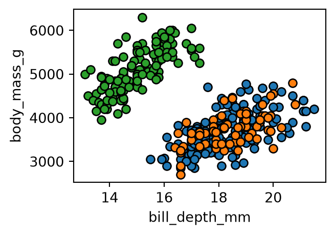
Tuning max_depth
What do you expect?
Decision boundaries: max_depth=1
Code
tree = plot_boundary(DecisionTreeClassifier(max_depth=1, random_state=seed), "decisiontree_cplot")
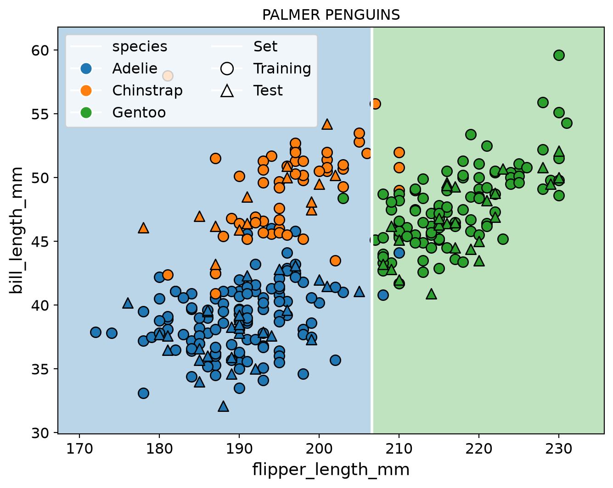
Decision boundaries: max_depth=2
Code
tree = plot_boundary(DecisionTreeClassifier(max_depth=2, random_state=seed), "decisiontree_cplot")
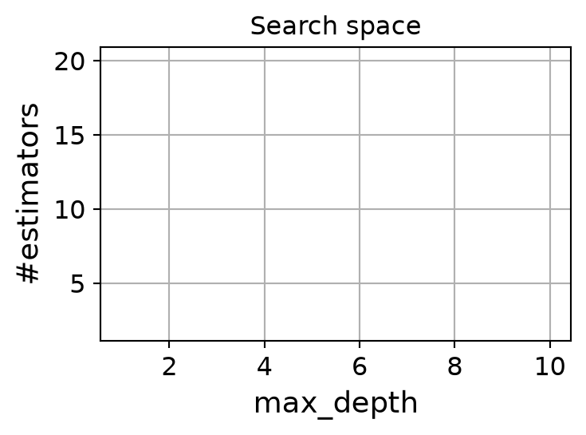
Decision boundaries: max_depth=4
Code
tree = plot_boundary(DecisionTreeClassifier(max_depth=4, random_state=seed), "decisiontree_cplot")
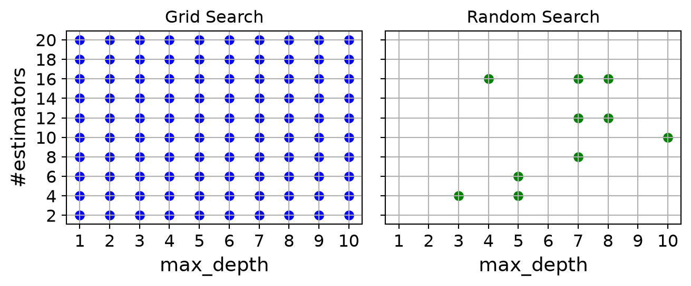
Decision boundaries: max_depth=6
Code
tree = plot_boundary(DecisionTreeClassifier(max_depth=6, random_state=seed), "decisiontree_cplot")
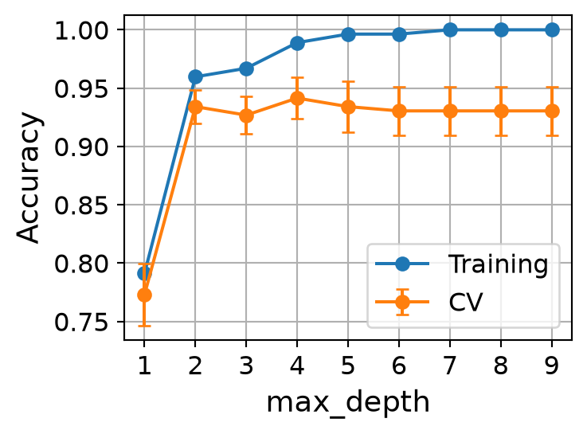
Plotting training and cross-validation accuracy
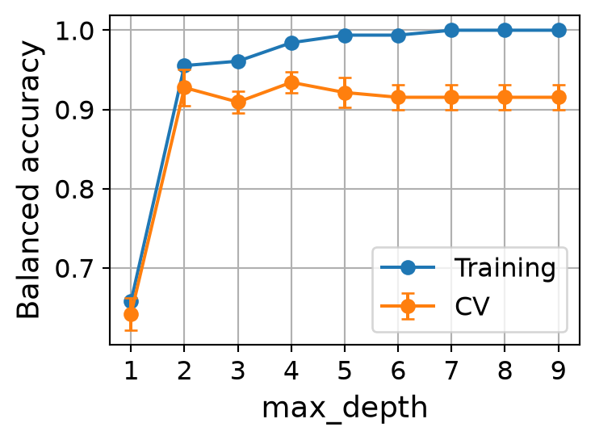
Hyperparameter optimization
Hyper-parameters are parameters that are not directly learnt within estimators.
In scikit-learn they are passed as arguments to the constructor of the estimator classes
How do we tune hyperparameters?
Hyperparameter optimization
Hyper-parameters: parameters that are not directly learnt within estimators
In scikit-learn they are passed as arguments to the constructor of the estimator classes
Any parameter provided when constructing an estimator may be optimized
estimator.get_params()
A search consists of:
an estimator \((\checkmark)\)
a score function \((\checkmark)\)
a parameter space
a method for searching or sampling candidates
a cross-validation scheme
Parameter space (or search space)
Search Space: space where each dimension represents a hyperparameter and each point represents one model configuration.
Consider the following hyperparameters of a random forest:
max_depth: maximum depth of a single tree
n_estimators: number of trees in the forest
Assume that the domain of the two parameters is the following:
Grid search exhaustively tries every combination of the provided hyper-parameter values in order to find the best model.
(Pure) Random search samples from the entirety of the search space
Such optimization methods are also known as direct-search, derivative-free, or black-box methods.
If good parts of the search space occupy 5% of the volume the chances of hitting a good configuration is 5%.
The probability of finding at least one good configuration is above 95% after trying out 60 configurations (\(1 − 0.95^{60} = 0.953 > 0.95\))
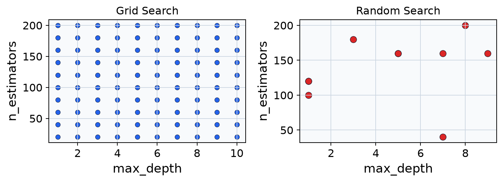
Cross validation
How do we test the hyperparameter configurations?
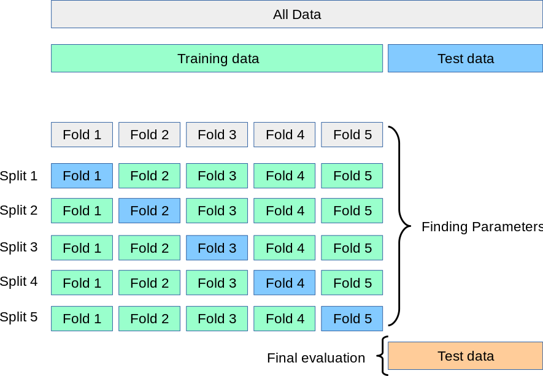
Example of cross correlation
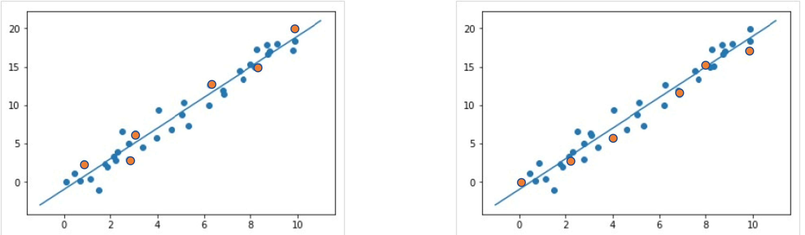
Random forest
Code
from sklearn.model_selection import RandomizedSearchCVfrom sklearn.ensemble import RandomForestClassifierfrom scipy.stats import randintrf = RandomForestClassifier(random_state=seed) # Define a Random Forest Classifierparam_dist = { # Set up the parameter grid for random search'n_estimators': randint(2, 200), # Number of trees in the forest'max_depth': randint(2, 20), # Maximum depth of the tree'min_samples_split': randint(2, 20), # Minimum number of samples to split a node'min_samples_leaf': randint(1, 20), # Minimum number of samples in a leaf node}random_search = RandomizedSearchCV(rf, param_distributions=param_dist, n_iter=50, scoring=evaluation_scorer, cv=cv, random_state=seed, n_jobs=-1) # Setup RandomizedSearchCVrandom_search.fit(X_train, y_train) # Fit the random search modelprint("Best Parameters from Random Search:", random_search.best_params_) # Output the best parameters best_rf = random_search.best_estimator_test_score = evaluation_metric(y_test, best_rf.predict(X_test)) # Evaluate the model with the selected metric on the test setprint(f"Best cross-validation {metric_label.lower()}: {random_search.best_score_:.3f}") # Output the best scoreprint(f"Test set {metric_label.lower()} with best parameters: {test_score:.3f}")
Best Parameters from Random Search: {'max_depth': 4, 'min_samples_leaf': 3, 'min_samples_split': 2, 'n_estimators': 124}
Best cross-validation balanced accuracy: 0.949
Test set balanced accuracy with best parameters: 1.000
Random forest
Code
forest = plot_boundary(best_rf, "rf_cplot")
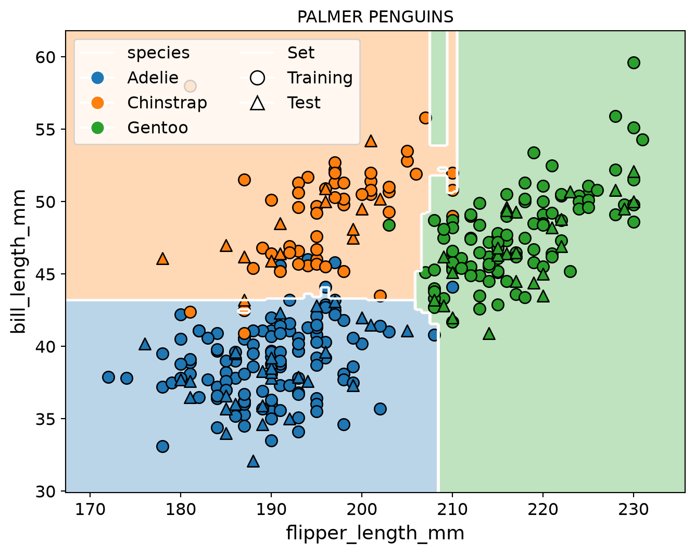
k-Nearest Neighbors
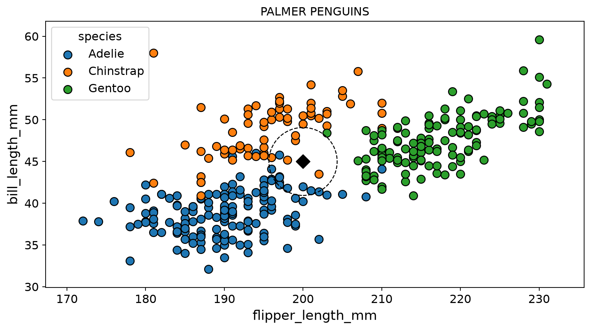
Tuning k
What do you expect?
Decision boundaries: k=1 (no normalization)
Code
from sklearn.neighbors import KNeighborsClassifierknn = plot_boundary(KNeighborsClassifier(n_neighbors=1), "knn_cplot", norm=False)
Perceptron is binary classifier. How can we use it in Penguins?
One Versus All
One Versus All (OVA) strategy for multiclasses
OVA provides a way to use binary classification for a series of yes or no predictions across multiple possible labels.
Given a classification problem with N possible solutions, a OVA solution consists of N separate binary classifiers—one binary classifier for each possible outcome.
During training, the model runs through a sequence of binary classifiers, training each to answer a separate classification question.
Finally, pick the prediction of a non -zero class which is the most certain and use argmax of these score(class index with largest score) is then used to predict a class.
One Versus All
For example, given a picture of a piece of fruit, four different recognizers might be trained, each answering a different yes/no question:
Is this image an apple?
Is this image an orange?
Is this image a banana?
Is this image a grape?
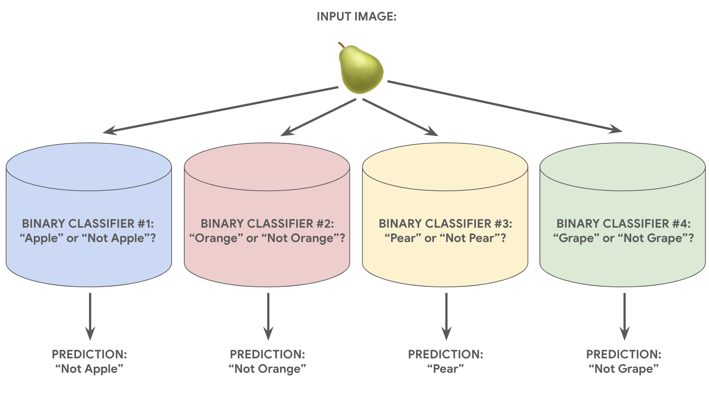
Perceptron
Code
from sklearn.linear_model import Perceptronperceptron = plot_boundary(Perceptron(random_state=seed), "perceptron_cplot")